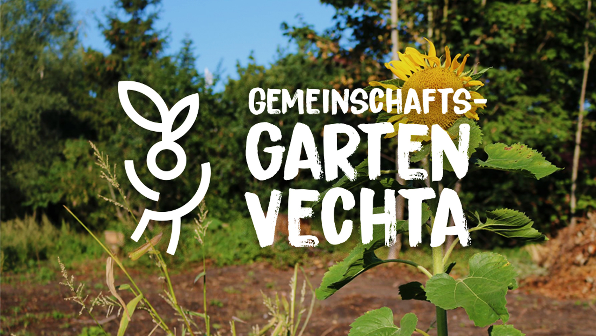

Logo creation

Gardening is a popular and fun hobby. It is calming, connects us closer with nature and teaches us to value the resources we are given, as we learn to grow and take care of different plants from beautiful flowers to even growing our own vegetables - and it is even more valuable when we share our knowledge and experiences with our community.
To bring these values closer into our focus and to have fun exploring the wide possibilities of gardening in an engaging and open environment, is the goal of the community garden project in Vechta.
I created an exciting logo solution using a combination of iconography and typography to communicate the playful, open-minded and positive character of the community gardening project in Vechta and the people behind it. What are you still waiting for? Come and bring your garding gloves with you!